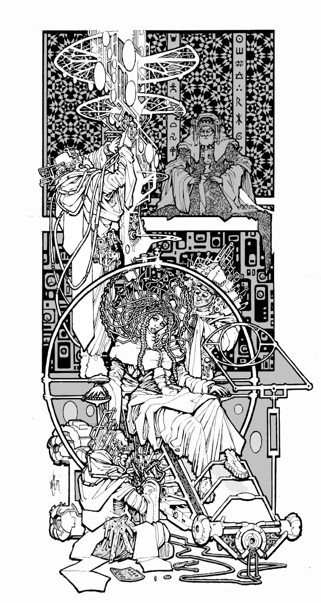
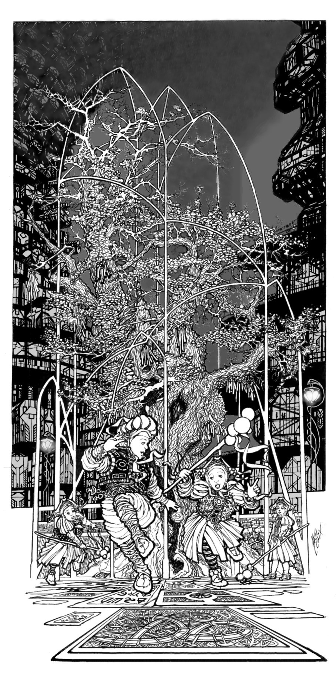
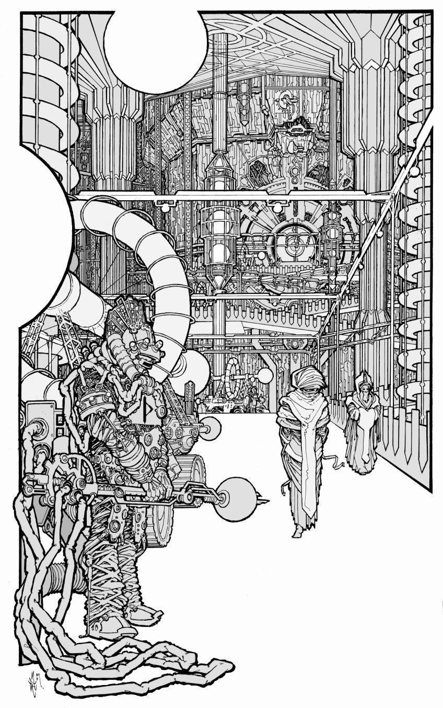
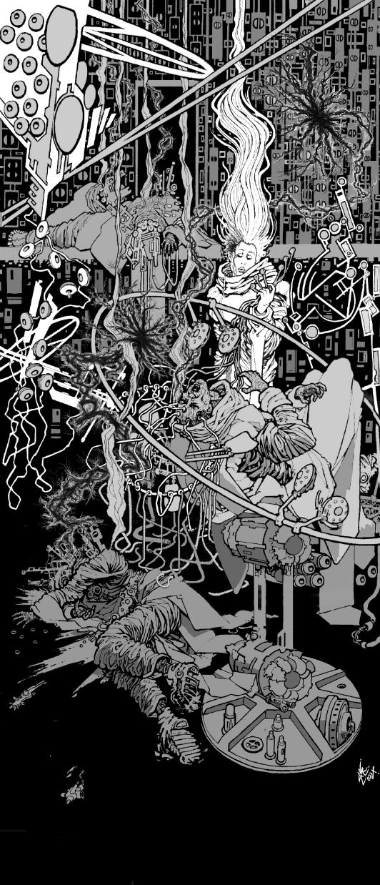
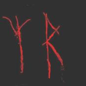
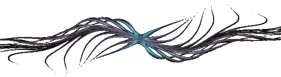

Eater
by
Andy Robertson
Eight miles above the Land, Khresten looks out into the night through one of the Eyes of the tower.
The oval screen before her shows a low hill in the middle of a barren plain. The scale bars indicate that it is about two furlongs in height and two miles wide. Set atop it is a knotted complex of rock strands, from which a twisting, iridescent stream of many-colored radiance fountains upward into the everlasting darkness. Glints of vulcanism drain away to the right, but beyond it and to the left there is no light at all and the enhancement routines of the Eye have sketched the naked surface of the Land in symbolic no-color contours as a random jumble of basalt tesserae in low relief.
There is no vegetation nearby, no physical structures of any sort, and no visible movement of beasts or giants. The lesser entities of the Land do not come near. In the ancient records this many-hued blur, dancing in the eternal night sixty leagues to the south-west of the Redoubt, is named The Rainbow That Dies.
Once more she applies herself. Quieting her breath. Humbling, stilling, and opening her mind. The continual fear is under control, nothing is reaching at her mind from out of the Land, and all thoughts of success or failure, of gaining acceptance in her guild, have been banished to irrelevance. She strives only to be part of the machine that scans the night.
Something touches her, inside her eyes.
She cannot sense into the upper dark, but the lower levels are truly open, and the screen becomes clear, detailed, reflecting her mind. The more subtle sight interfaces with the electronics as easily as it does with the organic nerves, delivering information that the computers of the Tower may glut themselves on or a mindblind co-observer may share if only instrument and operator are in harmony. It is an ancient trick of the Monstruwacans.
The images of six black tubes appear on the screen, drawn from her mind to overlay the barren dark. Their roots are spaced symmetrically about the gush of the Rainbow, and they flow upward, swaying, to open in monstrous flowers of night that fray upwards into nothing. Complex structures writhe within them. Peristaltic narrowings pump plasma skeins up and away from the Land, up to the region where the eyes of her soul refuse to construct more lies to overlay the glass and silicon grid before her with a thousand different shades of black. Each dark Flower is about a mile in height, and above the two-hundred fathom level the stalks show some of the typical dendritic character of the pneumavores, branching and rebranching into hard black points. Some of these points wave free, searching. Others are buried avidly in the central bright stream.
All is stable, and the Eye screen is delivering data at an optimum rate for the machines, but the human Monstruwacans who stand around her also require to know what is passing in the mind of their seer. Khresten begins her verbal subjective log.
"Six shapes, like flowers, grow from the Land. Each is ... thrice the height of the Rainbow."
Are they rooted? Of long residence?
"An air of permanence surrounds them. A year at least. Yet they are not fixed — they are cyclic — they are growing — they waver and change."
Are they Eaters?
". . . not of us. Of the Rainbow. That is why it is dying. Now they wait..."
What do they wait for?
". . . for something from above, Senior. They are waiting..."
. . . to welcome it, she realises suddenly and says. That is a knowledge that could never be relayed through the screen, but to her it is obvious, immanent.
Once more she feels the insect-touch on her retinae, and though she knows the danger she opens herself further. They are not conscious of me.
The screen is suddenly full of detail. The entities of the night come into a sharper focus. Each stalk is a braided, forking, writhing column of darkness. Tiny motes of unlight stream up and down, pulsing irregular blobs carrying what might be dissolved shreds of their prey, checking and stumbling as they collide with each other. The Flowers are milking the Rainbow, building and strengthening themselves from its flesh, which they suck in and consume through pores that open and close on the tips of the dark branches. They are Eating it. It writhes from one side to the other, from one scourge to another, pierced, trapped, hooked, bled, and its essence diffuses away into the thorned webs of darkness. It is slowly growing weaker and smaller, though it seems still to try to fight its way upwards as its tormentors continue to grow larger and more extended.
The interface between the distant entities absorbs Khresten's attention entirely, and a sense of the most awful pain, of the diminishment of that far bright being, overwhelms her. Her mind opens yet further. Despite all warnings and despite all her discipline she begins to lose touch with her own body as her center shifts towards the radiant agony, and she feels herself flowing out into the Night on a slow tide of nausea.
The glutted Flowers become clearly visible as pulsing fractals of black on black, their faces now tilting inward to form a cup, a web, a tangle or nest. They are connecting to each other, fusing together into a complex of threads that moves and links and breaks, not fully symmetrical, but somehow...wet.
And something new is beginning. The Flowers are not alone.
Something is descending out of the night. Threads of sentience fall from the upper dark, and here and there they touch the Land and dissolve to nothing, each returning a racing pulse of information which, in her heightened state, she feels as if it fled along her own nerves.
She cannot sense them until they flash: she cannot follow them back to their source: she knows them only by their echo, by the hollow in the night they leave as they vanish.
The threads fall around her and on her, each bringing a spark of unknowable otherness, and her soul reports each touch.
Again. And again.
Gripping, gripping as hard as she can, she is slipping from her points of anchorage. The Tower is tiny and distant, a complex clutter far behind her atop the vast pyramid of shielded life that is the Redoubt. A deep cold surrounds her, a physical sensation like freezing currents of wind, overlaid by the knowledge of ravenous things awakening and approaching. She has gone too far, been too trusting, made foolish errors lethal for a seer, and her immaterial spirit is losing its connection with her flesh and drifting helplessly, out into the Night Land.
I am lost.
But her body, tiny and far from her as a distant doll, still obeys her. With the faraway puppet-eyes of her flesh she can see that the Rainbow is now totally confined, nearly consumed, a smear of light with a thin pulse of despair echoing out from it. She babbles something as she closes her eyes, closes her mind, and releases the gesture of Guard, brushing against the light beams which interthread her fingers for this very purpose. Instantly the ravening electronic shields of the Tower flash into being round her. The room roars as the primary V-pulse fills the walls, the cybernetic memories are blanked with ruthless overriding authority, the screen glares white, then true black, and she falls back trembling in the chair as her returning soul snaps into union with her body.
Not too late. And from the eyes of the grave men and women who surround her, from their voices and hands, from their mind-touch, their speiking, she knows of nothing but affirmation, love and support.
The recovery, the interrogation, the report, are over. With her chaperone, apprentice Khresten descends towards the Redoubt and her home city within it. But she is still pale and shaken, still unstrung, her knees as melting wax, and the older woman must half support her as they ride down the central well of the tower.
When they are alone and there is no risk of indignity Khresten huddles against her companion. Let us go down quickly, quickly, she does not say. She blanks her mind, and thinks of home and her younger sisters. A ghost-ache traces the length of her spinal cord and her major nerve trunks, slowly fading as her errant Spirit knits itself back into her flesh. The tall old woman whispers to her and reminds her to be brave.
They fall two hundred fathoms, past level after level of active and passive observation systems — radar, optical, sonar, mindset — past datastores, libraries and power nodes, administrative clusters and support systems. Most of the levels are temporarily shut up and dead. Some are sealed and Forbidden. Others are in use, brightly lit, filled with tangles of enigmatic equipment and moving figures. Day and night, the Monstruwacans interrogate the Land.
They reach the tower's foundation. Below this is the truncated roof of the pyramidal Redoubt proper, three fathoms thick of imperishable metal, quick with subtle fires. But the Tower and the Redoubt are sealed from each other, and they must descend on their own feet, breathing with the aid of air-bells, past the final blanks that insulate the Tower and deny any infection entry to the Redoubt.
No dangerous path is permitted. No communications link, no optical fibre, no microwave beam, no quantum pair, may connect the last refuge of humanity with the observatory of the Monstruwacans that looks outward on the Land. Only human beings and written records ever make the passage.
They descend, wading the horizontal Air Clog. They give up the Word. They enter into the safety and the peace.
A day has passed, a night has begun. Far below the Tower, deep within the Lower Cities, in the womb of the Redoubt, in her home, in her house, in her bed, Khresten dreams.
Sleep-time in the Four Hundred and Third city breathes round her. Her two younger sisters sigh quietly, sleeping, a fathom or so away from her in the same room where she lies. Their minds brighten and dim in a slow rhythm, moving between REM dream and profound theta passivity. In the next chamber the minds of her mother and father are dim red coals radiating a quiet animal warmth. There is a whisper of fluttering fabric strips in the ventilator. A gentle radiance flickers over the walls, too soft to awaken the inhabitants, for in this age no-one ever utterly darkens a room or sleeps alone unless they must.
Khresten dreams that she wakes, that she dresses and walks out of the room. Obedient to an impulse she refuses to acknowledge she leaves her house and makes her way to the public viewing galleries — never empty at any time. She enters and takes a seat well separated from the others, as is her custom.
Before them, with dream-logic, is her screen from the Tower, now somehow grown to the typical dimensions of a viewing gallery. But all is safe now. The monstrous threats of the Land that press inward upon her with a thousand attentions every instant that she is at her duty are absent from this place. She thinks. We have disarmed them: we can study them in peace.
Her screen is once more showing the Flowers tormenting the Rainbow. She strokes the machinery with her mind and tries to interface with it, but there is no engagement. And she understands that all that is past. The Flowers are now just one more of the shows — she thinks with faint scorn — the shows, the bogeys, the harmless pictures from the Land that can be used to entertain the half-blind, half-deaf, other people of the Redoubt.
In the audience that surrounds her stupid pity replaces stupid fear as the Flowers consume their prey. The Rainbow is so clearly in agony, so clearly having its very substance sucked away. Unconscious of their own emotional radiations and yet affected by them, the viewers stir helplessly, and one woman, perhaps an undetected and untrained partial Sensitive, has the bad taste to telepathically spiek her feelings in uncontrolled verbalised form. With practiced patience, Khresten guards her scorn, but behind her she feels another consciousness flick in sympathy with hers...as now once more the expected climax arrives. The Rainbow withers, fades, and dies, reducing to a blurred nub of mist. The Flowers join together into a single organism, a single intermeshed cup, opening upward.
In silence the other patrons leave. All except that one behind her.
But she is distracted by the screen. The slow fall out of the Night is beginning, and now she will be able to study it safely beyond the point where she was forced to retreat. The shapes stir in the blackness and then become tense and still. She tries to watch, but the threads falling from the upper dark are scarcely visible. It is hopelessly frustrating: there is no contact, no feedback, no touch. And she finds herself straining toward the screen and trying to affect it. Her throat constricts. She can see so little but still she can tell that the threads are falling closer and closer to the Flowers. Something is happening.
And now one thread finds, touches, fuses, with the Flowers and this thread does not break, but connects avidly, thickens, plumps ... her hands fall into her lap and her palms press into her flesh as the Flowers and the Thread fuse with astonishing violent rapidity into a single thing: a round solid-seeming mass, fat and satiated, settling in on itself, straddling the shreds of the Rainbow that yet remain.
A shock passes through her. Her breastbone quivers.
She awakens.
As she does it comes to her again that there was someone near her in the gallery, regarding her and understanding her.
Another Sensitive? Khresten thinks. Then the dream recedes. Half-sleeping she comes to the understanding that it was only a dream, that she is safe in her bed. And it was folly of course: it would be Forbidden to duplicate the more subtle and dangerous achievements of the Tower down here. To prevent the creation of a path the galleries of the Redoubt may amplify only visible light ... She lies awake for a short time, then sighs, and thinks of other things, and passes to other and unremembered dreams.
Another day. There is no work for her to do in the times set aside for her recovery. But of course there are the children to care for and to teach.
Watch, little sisters. This is how it is done. She bares her arms and throat, and very carefully and exactly dabs a spot of doped nectar on each pulse point. Then she recaps the vials and sits completely still, not to ring her tinkling tinsel jewelry, while the heat of her flesh sends pheromones and molecules of glucose adrift through the room.
Magically, jhenna and jhenni drift out of their open cage door, circle and flutter, and settle to feed, perched on her parallel upturned wrists. Her two sisters laugh with delight as their pet butterflies flirt their wings, showing comical eye-spots like perpetually amazed and outraged faces.
Hush, hush, don't frighten them. There is one drop on the hot artery at the base of each thumb, and she has judged the quantities there exactly right, because the two insects take wing again at almost the same time. They flit round her and then resettle on the smaller traces she has left inside each of her elbows, in the hollow next to the big sinew: a sourer blend of fructose and a little vinegar with a different chemical messenger blended in. Again they sip, and again, almost together, they fly away. Perfect.
She sits even more absolutely still now, chin high, smiling. Even her hair must not move, for the third smear is in the tender groove to each side of her larynx, half-brushed by its fall. But only jhenna wants this: her wings tickle Khresten's throat, while mischievous jhenni flies away to investigate the room.
The little girls chase him. Don't grab, don't grab. Mnemmne the elder catches jhenni at last, persuading him to perch on her own much-daubed hand.
"Make him spread his wings again, Khresten. What is he thinking?"
I cannot do that with just my mind. Give him something sweet, sweetheart. Look, how he loves you.
"Why did you send the gold butterflies back to that man? They were lovely, I would have liked to play with them too."
You will understand that when you are older, little sister.
The younger sister waits frustrated, beginning to be angry, so Khresten gives jhenna over to her and sits down quietly. The two little girls coo over feeding their pets for a while and get distracted, as usual. Then they let tFlowershe butterflies free and huddle up on her lap, two sticky little messes of syrup, squashing her, to the further ruin of her thin housegown.
Three more days left. Then she must return to her duty, in the heights above.
The Tower, again: questions.
"I dreamt of it. Of the Rainbow and the Flowers. That may affect my perception, Senior."
Not when you are linked to the machines. Are you afraid?
"Yes, I am afraid."
Good. You have had seven days' rest. Are you ready?
"Yes, Senior."
The Rainbow chokes and dies, again and again. The Flowers Eat it. Why? What comes from above?
"What is the Rainbow, Senior?"
Perhaps one of the allies. It survives cycle after cycle of this. But most likely, another unknown.
Begin now, apprentice.
Khresten bows her head, binds the sensors in position, and carefully takes the required conformations with her hands. Each member of the team checks off in turn. All is ready.
Once more she fuses with the Eye and looks out. Below her the Air Clog, the force field that is the first layer of defence, bells out from the foot of the tower down to its anchorage in the radiant circle which surrounds the Redoubt at ground level, miles below. The minds of the Watchers strike against it like furlong-thick bars of metal, but she slips between those bars and turns her regard outward. Though neither her body nor her soul change position her focus of attention flits swiftly, carried by the machine, away from the ancient knot of forces centered on the Redoubt, past and over the South-West Watcher, past the Road, over leagues and leagues of blackness, to where the Rainbow writhes and flickers.
The Flowers are present again, but they are tiny. A cool mindpressure from the log-monitoring cyberneticist informs her changed position and she sees at once that these are successor entities. They are growing in slightly different positions, more widely spaced and shifted slightly clockwise, though still symmetrically surrounding the Rainbow. And these Flowers are not yet flowers but only unbranched stalks, writhing slowly as they grow, stretching upward for a minute and then shrinking in a slow rhythm.
It is early in the cycle. The Rainbow is hardly affected. It still flows smoothly upward.
She watches for two hours while the Flowers continue to grow very slowly. At the end of this period she requests a rest, and the team pause to discuss what they have been seeing. They agree to wait five hours and then resume. They have now recorded the cycle in detail at two points, and the important thing, they concur, is to see what follows the growth of the Flowers to their maximum size and their fusion into a single entity.
When Khresten returns to her duty the Flowers are just opening. They bob and dip grotesquely, each black mouth in turn plunging into the flesh of the Rainbow and absorbing a quantum of its being. A different technique of feeding, which Khresten notes and describes. . . how quickly I become used to this. This session is shorter. On a simple extrapolation it will be at least twelve hours before the Flowers reach their full height again.
Since there is no point in taking the risk of continuous mental observation, two of the other apprentices monitor the Rainbow using only visible light, while the shields go up on low power and Khresten rests.
They call her back when the Rainbow is again guttering down towards extinction. She bows, embraces the metal, and forms for them again a picture of the avid barbed networks consuming the stream of light. But this time she is more careful. Practiced, prudent, she refuses to be lured forth, but watches safely as the Rainbow dies and the flowers fuse once more into a single mesh.
The tangled Flowers become absolutely still and tense, waiting. Now the fall of the threads from above begins. Confined within the Tower she is only just able to detect them, but she successfully resists the dangerous urge to see more. The half-seen threads fall closer and closer to the Rainbow, unseeable till they make contact with the surface of the Land, apparently blind, groping, searching, scattering at random without system or logic, until — at last and not perceived until it has already happened — one has touched the Flowers.
Something like a dark lightning bolt slides down it. The Flowers quiver, seemingly in shock, and fall together into a single globe. She startles.
Once more the shields cut in and the cybernetics zeroes all data. She apologises to her team, but what she knows she cannot tell them. It startled me because I dreamt it. I dreamt this happening.
But surely not.
No, it was not exactly the same.

To reset the shields with a proper delicacy will take almost an hour. As the apprentices go about it she relaxes, falls back in the chair — and becomes aware that someone is looking at her: looking at her. She unthinkingly jumps to correct her immodest posture, then stops and casts her eyes and her mind about the room in great anger. Who? But it was not the Senior, not any one of the grave older men. And it was not any one of the young men, all apprentices like her but not sensitives, not gifted with the Night-hearing, who are utterly absorbed in the matters of their Technos.
Her flowering rage that Eve-teasing should interfere here, of all places, falls away as she scans their minds and sees that there is no one who it could have been, no one at all.
She was mistaken.
This is really my home, she thinks. Absurd. But here ... no polite, suitable young men trying to please, while their parents talk formally in the next room. No little poems about the beauty of instep or wrist. No strangers glancing at her, unconscious that their under-minds are rehearsing a rape. No passers-by reimagining her into a stupid naked popsy and tucking her away to dance behind their eyelids while they milk themselves in the night.
I will never marry. This is the better life.
But such thoughts belong to the Redoubt, not the Tower.
She directs the Eye towards the face of the South-West Watcher and contemplates It, as calmly as possible, not fighting fear, for twenty minutes. It is a much-practiced penance or exercise, though not one usually carried out through such an amplifier. Her coworkers understand and allow their minds to subtly support hers, without questioning her reasons, until she is satisfied that the gaze of the Monster has burned all the littleness out of her.
Calm again, she confronts the Night.
Her focus of attention moves out from the tower to where the lingering ghost of the Rainbow swirls and then halts, aghast, at the monstrous globe of darkness that now squats above the remaining shred of light. It has grown beyond all proportion. It is rooted on the six stalks that were the Flowers, their tips spreading like trees or veins to form multiple points of attachment or support. Its surface seems hard, rigid, almost opaque, utterly beyond any penetration by her. It does not move.
Something is inside it. There is the merest hint of stirring life.
She watches for two hours more but nothing seems to happen.
At last she retires.
The cycle, they agree, is not finished. From the stalks to the Flowers, from the Flowers to the tangled cup, and from that, fusing with some influence from the deeps of night, to the globe, nearly a mile wide, multi-rooted, hovering above the Land. If the Rainbow follows the cycle as it has done for seven years it will pour forth again in full power in less than three days more. In the intervening period, therefore, something must happen to the globe.
She is exhausted. It is agreed she will descend to her home and rest for one full day. After that, they hope to witness the final mutation.
Coming home earlier than she had expected, safe again within the gates of her own City, Khresten dismisses her chaperone and walks abroad through the streets. She always dresses as anonymously as possible, affects the veil in public as many women do, and once she has taken off the shoes which one wears only for journeys outcity there is nothing to mark her. Few ever recognise her as a Sensitive and one of the apprentice Monstruwacans.
Busy people move to and fro. The buzzing hive of life surrounds her, and the pad of a million bare feet. Though she was warned years ago that the teaching and the exercises of the Tower would continue to increase her sensitivity beyond bearing, she is shocked again by the noise. The uncontrolled mental radiations of the inhabitants overwhelm her and though she screws her mind as tightly shut as possible she cannot go on. Regretfully she modifies her path and avoids the most crowded public areas. Ten days ago my soul was naked in the Land. And can I not endure the Agora of my own home city? Apparently, she cannot.
That night she dreams again. She walks though the quiet nighttime streets visiting the scenes of her youth: the school, the places where she would meet her playmates, the library, the playgrounds. All those friends are separated from her now, all gone their separate ways and some married already. She walks slowly. Alone she wanders down the long corridors past the statues, past the open public gardens and malls.
Midnight passes, and forty miles below, deep in the Underground Countries, a continent of spices exhales. For joy and for pleasure, the Windmasters bring its breath to the Pyramid, and a cool scented breeze blows from the vents. It is jasmineday.
A few other people are abroad and now she must follow them back to the viewing gallery. The Flowers are there. But she has seen this already.
She speaks to her waiting friend.
It is an old story. Really, these shows are for fools...I come here because I am one of those who looks out on the Land and discovers these things, I suppose. No, these are not bad people. Very few of them are weak or cruel. But they are so blind, so stupid.
You are a stranger here? On your wanderjahr? I do not need to see this again. I will return home now, but I will show you what I can of the city, on the way. That is right, to a stranger. You will only have a short time here.
Let us leave the gallery. No, you must not walk beside me! You, a man and a stranger here! Walk to one side and a little behind me, at a proper distance.
So. Here is the Four-hundredth-third city, named Blaise. What would you see?
Every House shows a different face. And they are all different behind their masks as well. Most are tens of thousands of years old, and each holds a clan of many families and a hundred old stories. They are private to their owners. I have visited only a few Houses, the Houses of my friends, and they were very different from my own home and from each other.
In that one lives the magistrate: it is not especially marked out, for the position is not hereditary. He is the magistrate for this year only; they are not well pleased with him.
Our lamps are very beautiful, are they not? We can do a thousand things with light. Harsh light, soft light, warm or cold light, calming or enraging, loving or hating. Our Lampmakers make them, and they are famous for it. Of course their best work illuminates this or that great and important public place, not in the open street. We send some of our best lamps to the other cities.
There is little machinery here in the lower cities: no fires, no furnaces, nothing loud or hot. How would we breathe? Our own body heat is enough to strain the lungs of the Redoubt. We make few things, so we must make them to last ten thousand years.
Look at this tile beneath my foot. The glyph marks the spot of a murder two hundred years past. That is a most notable memorial, but you can see that each stone once carried a message, though most of them are worn to nothing. Every stone and every wallplate in this city has a story written on it, they say. The ones that are blank are simply those that have been cleaned by time.

And see how many fountains we have in the streets? And the trees? Come past here. When I was very young, this one, here, was the darling-tree of my girl-band. Tllellalu is his name. We watered him, tallied his leaves, cleaned him of rust or blackrot, celebrated the first flower that blossomed each year. I see the younger bands are taking good care of him. Goodbye, Tllellalu.
The great pillars support the core of the upper Cities: no doubt you have the same in your own home. Half the lower pyramid is solid metal by volume, they tell us.
The Library. I spent so much time here when I was young. Dreaming. How I wanted to be a hero, and explore the Land. Half the young people do, I suppose. I read story after story. All that is a fantasy, of course, as you come to understand when you grow up: only the insane go. And anyway it is Forbidden for women. But I had the Night-hearing — strongly enough to be trained — and that decided my future.
So now I explore the Land in a different way. I have been a seer for the Monstruwacans for two years. No one remains a seer for very long because the strain is so great. In two more years my time will be over and I will have a choice, to stay with the guild, or return here to join another guild, or marry, or do some other thing. But if they will have me, I shall stay with the Monstruwacans, and that shall be my life.
This is a duello ground. It is deserted now but even so it is not polite for us to linger here and gawp.
Here is my home. Our whole clan lives here in the separate houses, all within the wall. My mother and father and my sisters: that is our family. And my parents' male cousins and their wives, and the elders of the previous generation.
I will not be living with my parents much longer, I think. I will live in a separate house, but still within our House.
Goodbye, then.
Khresten wakes sleepy and lazy. For once she feels properly rested and happy. She hums as she stretches, and catches the eyes of her youngest sister as that one tiptoes out of the room.
The girl has been told many times by everyone Let your sister rest and told Do not be noisy while Khresten sleeps in the morning and now she makes a face of exaggerated virtue and patience, mincing out with her finger to her lips and her hips wigwagging. Obviously someone needs to be taught a lesson.
Khresten leaps on her intending to provide instruction, but is fatally surprised when Mnemmne attacks her from behind: the three of them roll over and over in a tangle. Panting, laughing, she pins both of them down at last and tickles them very soundly while they scream and laugh and struggle.
Wai! Wai! She threatens them. I am a monster from the Land! I am going to eat you!

The day of rest is past. The great lift bears Khresten upwards again through the miles, and the armour of her resolve closes round her like a nightsuit. This time, she thinks, they will gain the full understanding. She will pluck it from the Night. She will not flinch whatever happens. She is no longer a girl, she is one of the elite of the Redoubt, one of the few for whom the energy needed for such rapid travel can be carelessly and routinely expended, and she will not be a coward.
They rise past city after city, up through the last arcology of man, up through the storied and decorated labyrinths, to the steady beat of gongs. Messengers and notables, scientists and governors, join and leave the lift, and as the great pyramid narrows towards its top and the Tower that stands there more and more of them are Monstruwacans, recognising her and greeting her silently. It is wine to her spirit. Her chaperone stands behind her and is forgotten.
She remembers when she was new to this task. She used to weep with fear when she went up to her duty. Now the fear still comes, but it is a fear that thrills her even when it loosens her bowels and makes her limbs tremble and her heart pound.
Another day of half-life is over. Soon she will look on the Land again.
The globe is still there. Nothing has changed.
The length of the cycle the Rainbow undergoes has been consistent, plus or minus four percent, for the last seven years. Before the start of the present set of phenomena there was a long, long, period of stability when its stream flowed uninterrupted. There are near-legends of previous mutation, reaching one hundred and sixty thousand years back or more, behind the horizon of record, but these are becoming difficult to understand and interpret because of the creeping historical changes in language and writing that even the customs of the Redoubt cannot quite freeze into stasis. The last explorer to reach that region and return died ten thousand years ago and had little to say of the Rainbow except to hint that it was not malignant. The only sure legacy from the distant past is the name.
Some time in the next fourteen hours the cycle will complete.
It is long period of continuous duty for any observer, but a pause in the survey cannot be tolerated at this point. The Senior and one of the other Monstruwacans spell Khresten at the Eye, one hour each, turn and turn about. The older men's time as seers is long past and their sensitivity has deliberately been trained down so they can endure months of Watch, but they can monitor major events like this well enough.
Hours pass. At last the call to her comes. A change is imminent. As the Senior rises and gestures her to take the chair he hesitates: he will co-observe using a secondary link to the Eye and either of them will instantly cut the contact if they see fit. Take very great care.
The mind-presence of the Senior guards her back, gazes over her shoulder, like an armoured man standing there, but the essential vision is still hers. The picture on the screen comes into the clear focus only a trained seer's mind can provide. She sees that superficially the globe is still the same. But there is a sense of increasing tension, of thinning. There are movements within it, refinements of essence. It is coming to a culmination of development, moving from one cusp of stability to another, and some unbearable climax is approaching. Part of her tries and tries to see more clearly and part of her simply endures the constant strain. Slowly, slowly, it changes.
Now the dark sphere seems to swell minutely, a datum sensed telepathically and translated by her brain as an intolerable visceral pressure, a sense of suffocation and confinement. And now, a pause. More minutes pass while she continues to watch. She does not think of herself at all, she tries to be as much as possible a part of the machine, but the tension grows and grows until the transferred sensations rack her to the point of actual pain.
And now the waiting is over. Intolerably complex forces shift and move. Rigidly controlled panic invades her and she denies to herself that there is any change, but the changes happen and continue to happen and now something inside her shrivels and shrinks away as the black sac of night is visibly and enormously deformed from within. Something is moving, something is about to break free. The vast thing changes with frightening speed and something is Oh so obviously it is being born. She cannot watch it and yet she will not retreat, she is reduced to a stone trodden underfoot, the fulcrum of intolerable forces, as the carnivorous Thing emerges, pauses, and vaults clear of the Land, expanding malignantly, filling the Night with a web of sentience.
She cannot coexist with it. Her heart still beats and the mechanisms of her mind and spirit still report but there is an instant when she is not. An Eater, one of the great forces of the Night, has been born and has gone out into the seas of darkness.
It flashes away and vanishes. Almost at once the Rainbow flows again.
Khresten makes her report.
Observation is suspended while the climactic events are analysed. The Master is there, all the most Senior of the Monstruwacans, where Khresten and her team must come and testify in the high shielded chambers of the Tower. They question her endlessly, repeatedly, study the logs, talk and debate, on and on. They question her, most particularly. The mechanical recordings are open to all, but she was the one who received the faint noisings of Other intelligence that might be interpreted as intention, desire, planning, threat, if such words had any meaning at all when applied to the Eaters. Some fractional essence filtered through to her, and now she tries to express it in words, in mind-pictures, thoughts, movements, not trying to understand but simply to pass on what came from the Land. They watch her and listen to her and hier her with absolute attention.
The consensus, after days of meetings, is that the recent mutations of the Rainbow are probably no threat to the Redoubt. To the watchers of the Land something new must always mean something terrible, but it seems, it seems, that whatever is being birthed in the the agonies of that distant fountain of light will at least ignore humanity. That is cause for celebration.
Also there is a hint that they have learned something vital and new about the reproductive cycle of the Eaters, or at least of one clade of them. But seers are deliberately kept ignorant of these things to avoid giving them preconceptions of what they might sense in the Land, and Khresten is only allowed to know that perhaps there has been some increment of knowledge, some tiny real gain.
Despite her enforced exclusion from the innermost circle of knowledge, there is subtle, measured, profound, praise for her. It does not make her proud or joyful, but as she listens to it she knows, at last, that her future is fixed. Not because they have started to ask her questions with a real need to hear her answers and her opinions; not because they defer to her in tiny measure; not because she has finally been told, Yes, a place has been readied for her, she will be welcomed with ceremony and honour; but because she now understands and shares what makes them Monstruwacans.
That Thing, rejoicing in the night. That thing and its myriad peers, who are the true children of the universe. The coming eternities of Darkness belong to them, not to humanity. Light and life only had a brief place during the first beginnings of the cosmos, and the great Redoubt with all Her millions is only memory of those days, something that will soon be forgotten, a transient, fragile hive of dust and insects.
The lash has been laid upon her soul. The scar marks her as a Watcher of Monsters for all her life, married to the Night. When she looks at her peers without speaking to them or touching minds with them she sees the same knowledge in their eyes.
She returns home again. Now she walks the busy streets unafraid. The chatter and shouts of undisciplined minds are just noise: the covert or unconscious looks of lust are as meaningless and automatic as the attraction of the lodestone for a grain of iron. Of what was I afraid? she thinks. And she thinks, Soon I must leave home, leave and live alone.
But there are problems, when she tells. Her mother argues and argues and then, amazingly, weeps and bawls. Then her sisters start. Khresten submits with a distant patience. She is soon to be of age: there is nothing improper about the move: she will still be within the larger House, the linked series of dwellings where her extended family have dwelt for millennia.
But of course the argument is not about where she will live but about the shape that her future life has now irrevocably taken, as they sense with sure instinct. It has been decided. It happened to me: I did not do it, she thinks. She refrains from trying to make them understand their own true motives. She is quiet, biddable, patient. She is as kind to them as she possibly can be. The ghosts of childish anger and annoyance stir within her and fall to dust.
Sleep-time comes, still called by custom the night. The argument is still bitter and theoretically unresolved, but they go to their room and prepare for bed. And now the girls huddle and whisper, and now little Mnemmne comes forward, with jhenna and jhenni perched on her wrists. Earnest, and serious, grown-up. This is her final effort.
"See how they love us. You have the Night-hearing, you know they love you. Stay with us, please, Khresten. Don't go away to the Tower forever."
Oh Mnemmne, it is not like that. I have to go. And yes, I have the Night-hearing, but the butterflies do not love. We imagine they do, because they have grown eyes on their wings that look like funny faces, but they have no minds. There is nothing there: nothing at all. It is all just something we make up.
"You are lying," says Mnemmne, and hits her, no gentle blow. "I hate you".
It does not matter. Khresten is unmoved. She feels as though she could never be deeply moved or grieved by anything in the Redoubt again. She waits while they talk and they cry and they talk and they cry, and at last it ends. She kisses them both. No, no; do not talk more. Sleep. This will pass. Tear-stained, they sleep.
She sleeps, too. Then half-wakes, then sleeps again. The night seems endless. The vents flutter. The gentle moving waves of light on the wall counterfeit the Rainbow: the darker shapes of the furniture seem to writhe. She experiences the ghost or echo of the night-fears she knew as a child, and half-thinking compares it with amusement to the real Fear that visits her as she looks on the Land. But it is bad practice to do that. Half the fight is to stop your mind running away, and even a small indulgence may have to be paid for an hundred times over.
She resettles her thoughts by tallying the night shapes in the room with their day-time reality. The table. The chairs. The butterfly-cage. The long rows of the bookshelves. The tall column of the lamp, now in nighttime mode.
Mnemmne's small fist has left a dark sweet bruise on her hip, which she pets, delicately. She sleeps at last.
She dreams, again, and her mind turns to familiar paths. She dreams yet again that she wakes, and she half-recognises that she is in the same dream-story, yet a third time.
Will she rise now and go out into the City, and visit the gallery, and look on the Land?
But there is no need for her to go anywhere. What she was going out to find has come to her, and a dark shape bends over her, moving.
It is too real to believe. A man? Here? How? She draws her breath, but before she can cry out, instantly and without movement or transition, it is upon her. You? Is it you? She is pinned, she is unable to move, her mind is somehow disconnected from her body. Surely it is a dream. As she is pierced. A touch, a touch, but it is not as it is when she touches herself, not like anything she ever anticipated, not the way she thought it might be at all.
Fuzzy-headed, Khresten awakens.
She hurts, never mind. It is necessary to hurry and there are excuses to make. Where is she going? Up to the Tower of course, but best not to tell them that. There is some fuss now, some nonsense which she forgets at once as she dresses and dons her shoes, walks quickly to the city gate, to the Liftport, limps up the stairs, routinely greets the folk from the cities immediately above and below hers as they gather together.
But modest young Khresten has forgot her veil; a joke! Never mind, she says? And where is her chaperone, ha? And there is some more foolish questioning here too, which she must deflect. But she will not ever need to be accompanied by a chaperone from now on, of course.
A moving town, the lift arrives, and slows so that they may embark. She hastens on board as if she could speed it up that way, and frets and paces as it continues to rise, stopping at every tenth city.
How hungry she is! Starving! She jumps to the refectory, eats pastry and pulses, sips tea. Her heart races. Her mind is full of darting thoughts. She looks around at the moving volumes of the Redoubt's inward parts, the heart and lungs of the pyramid, the passages and airways, as if she had never seen them before.
Her ears pop, the temperature falls slowly, and she dons her hooded coat at a certain height, as she always does. Up and up. Stop after stop, and from time to time need for more foolish words. And now she needs to go to piss. There is only a little blood.
It will not be long now. Yes, soon.
Be patient. I cannot make it go faster by any means.
Be patient.
Here at last is the top, the last stop. Above the last city. Now, past the armed men, up through the long twisting ramps. And here are the guarded Locks that lead up to the Tower and the low-pressure areas.
Now I yield up the Master-Word to them. Be silent. They will let us pass. Silent.
Do you not need a bell...? Well, never mind. Yes, we will go up quickly.
Now here is the chamber at the root of the Tower, and we call the smaller lift that takes us up the spine of the Tower. No, I will not be challenged; I am an Apprentice, trusted. We can go up safely. There is no rigid schedule for my attendance.
Ten levels more.
Here we are. This way.
Why should anyone stop me? I will show you this as well, that is all. You require to look on the Land. I understand. A brief look will be enough, yes, I understand.
This way.
Here is the chamber we are using. Through that doorway. My team will be within.
And who are these people? Senior Monstruwacans. That one is the Senior of my group.
What?
What?
She starts forward in obedience to the clear instructions. Kill them. Enter the chamber. She stops. Her confusion is absolute.
She stands, alone and wild-eyed. The Senior regards her. She has seen the young men's hands move when they fight, and just so, his mind flashes. She senses his decision to violate courtesy and an instant later his thoughts have invaded hers, irresistibly. The flame of alert that detonates in him washes over her. He cries out words of warning and rushes to seize her, but she too is running, towards the doorway.
She is very fast and very strong. He is far stronger, grappling her with arms like brass, breaking her to her knee, smashing her temple against the door frame, extinguishing her consciousness and blinding what rides it, but he is not quite fast enough.
Through the door she has managed to take another glance at the active, telepathic, screen. Something that had entered her and grown there now joins with another part of itself, coming from elsewhere, and, completed, goes about its own busy purposes.
There is an interval. Then Khresten comes to herself again with broken bloody head. She is lying on the threshold half in and half out of the chamber. The raised edge is sharp pain beneath her.
It is dark. Somewhere an alarm thunders endlessly.
Is this nightmare? Another dream?
If not a dream, then what are these shapes that surround her as she rises to her feet?
What men are so tall, so slim? What men writhe so? What men have so many strange arms or such great dark heads?
The braided columns of darkness rise about her, dancing. They trace the movement of her arms and body, gently touch her back and breast. They glide and dip, kind and gentle towards her alone.
The Master, all the most Senior of her guild, were utterly wrong, it seems. The Flowers are here, come to greet their friend and lover.
They plunge no thorn into her, but all around her is death. The walls have warped and most of the lights are out. Blood spreads. The Senior lies nearby, still, and the rest of the team are scattered among the equipment. Here and there other dark Flowers stir, tapping the still-churning mitochondria of the corpses or the hot energies of the power lines. Some of them are perched horribly, on or somehow inside the heads of the dead men and women, seeming to be rooted, moving very slowly.

Compared to the monsters in the Land they are tiny: but mere size, she knows, means little to these beings. And they are growing. They move swiftly and easily. They leave smoothed tracks of altered matter on the floor, where metal and plastic have been invaded by Other life, forced temporarily into new structures, and released back to chaos.
She walks forward and the Flowers permit her to move. They rear up three times and seven times her height. And now six surround her, in a familiar hexagonal pattern. They flutter about her and brush her face, a numbing not-touch, but they do not obstruct her in any way. They seem to regard her as some sort of center to organise themselves around, as they explore this new resource, this new kingdom.
She understands now what has been done to her mind, what has lived inside her since that first touch out in the Land, and how she has been deceived in her dreams. Or how she has deceived. Perhaps the Flowers sense her only as some mobile part of the Redoubt, some fertile, receptive area, some weak spot.
She thinks for an instant of their destruction. She only thinks, only for an instant, because in that instant her mind is compelled to alteration. It is not a threat, but simply the fact, known at a level below communication, that if she has enmity towards them she will cease to exist before she has finished coherently forming the idea. She must remain their friend.
So, she will be a friend. It is a delicate balance: her thoughts flow towards hate, fear, horror, rage, again and again, and each time flinch back as if from a charged rod. But after a few seconds some sort of stability is reached. Now she is able to keep her emotions towards them those of love only. She recites to herself, Do not think hatred. Remember, these are guests.
She has survived. Perhaps others can. Perhaps she will live for a long time here, above a pyramid of slaves and dancing darkness. And that will be good, of course.
She comes to the screen, still somehow powered up. She picks up on the secondary link with her hands held above the hands of the dead and drained husk that sits there, and she looks out. She regards What hovers there in the night. Then she directs the Eye down and around to observe the radius of the Land just beyond the Circle.
Without surprise she notes what is growing down there. What intends, she supposes, to make of the Redoubt what it has made of the Rainbow, what it has made of her.
Her courage, and her silence, and even her ignorance, are important now.
She knows a little of what is coming. She knows, but will not by any means tell until she must, that lightning gathers and thunder rises in the channels of the ancient machines. Nerved by electronic synapses a million times faster than living flesh or stalking ghost, the Tower has gone into secondary lockdown mode. On the instant of first warning every passage between it and the Redoubt was flooded with incandescent plasmas, and now the corrosive energies that infest its outer shell are being fired to tenfold power. The major structural members are lit, and the vibration spreads from limb to limb. The ancient skeleton is aflame. The decks rock.
It is not simply power that is being mustered. These energies are coded, destructive, cunning, violating, sterilising. Once confined in any way the pneumavores are surprisingly easy to destroy. The best tools of all are certain subtle subsets of electronic vibratory patterns, but many of the Eaters are delicate enough to be wounded and disrupted by a strong beam of coherent light, and if all else fails enough simple heat will do.
The Sharks of the Ether can repattern themselves onto condensed matter and twist it to their will, can pluck out a man's soul by the roots streaming fluid like blood and feast on the delicate, lovely, patterns, but the stones and fires of the early universe are not their proper home. They belong among the seas of electrons, the dust and gas and decaying protons, the delicate streams of plasma, the vacuum, the dying microwave echoes. They belong among the things that are to come, not among the energies of the world's short Youth.
But those energies linger here, burning hot, and the beings bred from them linger too. Bred from those energies and skilled in their use, ten million years of war have not left them defenceless, and they do not have to fully understand their enemies in order to destroy them.
And the Flowers can know nothing of this except what Khresten knows, and, perhaps, allows to slip from her mind to them. This is why the wisdom of the Redoubt selects Khresten and her peers to send their minds out into the Land: why it chooses those like Khresten, who would very freely confess that they are only foolish, ignorant, young men and women.
Now, swiftly, war is declared. The walls of the chamber purl with fire. The floors shake. The doors spark. From every point and edge blooms a ghastly nimbus of light. Khresten's white-ash hair rises with the static charge, where it is not glued down with blood.
The Eye, kept open by some unknowable pressure, is fused, as whatever cunning the Eater was using to keep the path available is checkmated by the ancient simplicity of a six thousand percent overvoltage and a failsafe incendiary. Hissing metal scalds Khresten, and the Flowers dance madly.
She touches the nearest dark web and kisses it, with her mind.
Let me explain, she spieks. It is very sad for us. But I will tell you what I know.
The fire is the Tower responding. The cybernetics are fast. The Eye-terminal fused because the alarms have destroyed it. And the shields are up, not only round the Tower, but between the levels as well.
The Tower, the machines, are fighting us. Not the men, not yet. It is only the machines we fight.
Can you kill the machines? Can you Eat their souls?
We are confined to this level and soon this level will be split up into tiny parts. Then each part will be burned clean and everything in it will be destroyed.
But I will try to help you. I will do everything I can. I am trying to warn you now. It was so brave of you, to change yourselves, to make yourselves tiny and explore here, in this inferno. You only wish to live and grow, as all things do. I understand. I do not blame you. How you must hunger, out in the Land.
But there, at the door...
You see it turn silver-white? You do not like that fire, do you? I see you too can die. Oh, that is sad. That is sad. What can be done? How can we save ourselves?
Be very still. Perhaps the fire will not destroy us all. Retreat to me. I will do everything I can to help you. I understand.
I will protect you.
It is only the machines we face. It is not the men yet.
Yes, the machines are terrible. But when the men come, you will know Fear.

Her left hand, unregarded, has been writing something over and over again on the surfaces around her, dipping back to the side of her head to pick up its red ink and then fluttering out again. It is writing over and over again in the darting strokes of the set-speech —
BEWARE DREAMS SEERS BEWARE YOUR DREAMS
— she is right-handed, it is in reversed mirror script. She will not think about her left hand and anyway she cannot see well to that side any more since she struck her head so hard.
She has left her message. Now there is only one other thing to do.
Far below, the bowels of the Redoubt shunt more and more energy to the defence. Mechanism after mechanism goes offline. The ventilators, the fans, the air and water pumps, are temporarily shut down as valves seat against reflux, and floods of power become available. The lifts cease to move. All industry stills. Throughout the pyramid and the Underground Country the lights dim.
The whole Redoubt braces for combat. In the cities, everywhere, there is the racing of armed men, but the Air Clog is unbreached, the temporary pneumavore activity at ground level outside it fading, and it will not be that kind of fight. Instead, the Earth-current, normally diverted into a hundred quiet streams, is being shaped to flow upward for one single purpose, to be forged and barbed by the instrumentalities of the Tower into a sword of defence.
The outer shell of the Tower is totally sealed. The sensors that were acting as paths have been destroyed, internal barriers have successfully prevented any spread of corruption within the structure, and the passages between it and the Redoubt are incandescent, triply impassable. The defence has held firm, above and below. The surviving Monstruwacans turn to counterattack. It is time to harrow the heart of the invasion.
The energies of the Tower are concentrated on the single infected level, and each segment is sterilised and cleared off in turn. Platoons of shielded and nightsuited Watchmen advance through secured areas in the practiced and ordered succession, setting the touchpoints, channelling and guiding the rivers of light. Before them, plastic burns, flesh burns, metal burns. Planes of lightning crisscross the open spaces as the air burns and then submits to its duty, conducting the patterns of hatred and defence which web the structure tighter and tighter.
If need be, the entire Tower can be melted like a candle. But that will not be necessary.
Khresten stands amid a shrinking crowd of otherness and weeps to see each of them die and vanish. Ozone and nitrous oxides scorch her lungs. She bleeds, she staggers. Not long, now.
The walls belly and drip fire. The hammering pulses invade the raised metal overfloor to a chorus of lightnings, and half the remaining Flowers wink out of existence. Others cling on to dead flesh, to the few remaining insulated structures, or to Khresten herself, protected by the console. They do not take revenge and do not attempt to communicate with her again. We do not understand them either, she thinks. So must it always be.
The last of them vanishes. Did they ever really spiek to her? Did her mind translate the unknowable into some sort of likeness of humanity? Was what she rendered to herself as dream speech and touch no more a communication than are the tropisms of a plant's root seeking nourishment? Than the butterfly-lures on her wrists?
It does not matter.
Like a swimmer clawing up out of murdering black water, she is herself again, her mind her own. She can see the armoured men approaching between the overlapping curtains of brilliance, but there is no rescue for her there, no touch, no warm community of life ever again. She is the enemy. All that remains of the invasion is the thing inside her, the thing that she now she feels, again, somehow interfering with her thoughts.
But you have not behaved well, she thinks. Not at all in the way that is proper for a guest.
I would be quit of you.
And now.
What is the proper, the graceful, way to go about this?
The room is a hell of light and power, brighter and brighter.
She kneels down, lies down, embraces the fire, opens herself to it.
Does one of the watching warriors salute her?
The fire is not hot, but it erases all complexity in matter or energy, reducing it identically to molecular and electronic uniformity, be it flesh or cyber or ghost. There is no pain, only numbness as the nerves are destroyed. It burns through her, seeking Otherness. It unpicks each cell. It illuminates, from inside, the delicate bones of her skull and the flakes of her back.
They will seal this level, and when they have examined it they will burn every particle of matter in it to ash and gas, and name it Forbidden. They will read her message in burnt blood on the burnt metal and they will burn it and burn her, too.
But they will learn from her words and they will praise her; for she was faithful, she made a good end.
